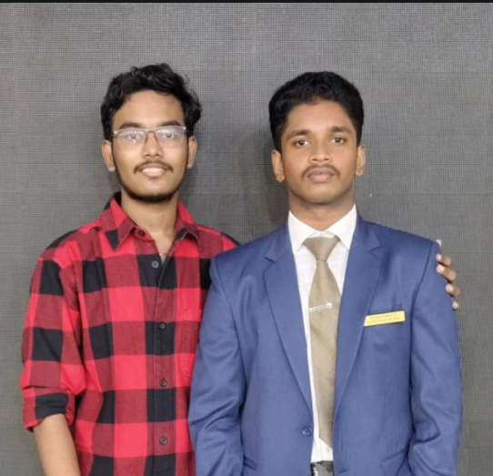
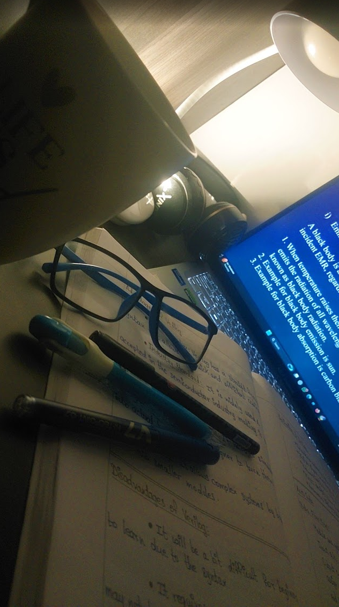

Education
School
Campion Anglo Indian Higher Secondary School, Trichy
My academic journey began at Campion Anglo Indian Higher Secondary School in Trichy — an institution that played a defining role in shaping my discipline, mindset, and competitive spirit along with my confidence.
The environment at Campion is not just for academics but about building character, leadership, and resilience aling with the skills that helps us to thrive in this growing world and it helped me to grow to the most in my character than in my academics

Eventhough Campion helped me grow more in character doesent mean I'm weak in Academics I completed my 10 grade with 83.3% and 12th grade with 83%. I also lead the school as the school pupil leader during my last year at school It was great indeed holding that flag and having that emblem everyting i represented the school
Table Tennis a part of my life started from the school and I've represented the school in various events and won many trophies

I also got many opurtunieties other than books and my usual stuffs which really helped me build my confidence which is one thing I have in a great amount like participating in culturals and Debates along with NCC were some great opurtunities that I will forever be proud and greatful of.
I have a wonderful friend and senior Rayon Angelo Gilbert who helped me in my leader position when I was the asst leader and i could mention that he is someone I look up to .

College
Sri Krishna College of Engineering and Technology
Eventhoug I had a a sucessful schooling journey (in my pov) there is something special in college that I didn't expect I am doing my college in Sri Krishna College of Engineering and Technology where I'm mainly focusing on building and connecting with people and grow immersively.
I joined SKCET a year ago and it really is wonderful learning experience and best of all the atmospher that's goated with those cloudy evenings and cold breeze.

I am studying B.E C.S.E Cybersecurity. And I primarily focu on the basics and leaning my carreer towards becoming a Cybewrsecurity Analyst rather than an Ethical Hacker but yeah I'll try that too and I'd love to have a startup or co-find one...!
Though there isin't much to say about my college journey I was the team leader in the recent SIH where i led my team to a loss yeah It weeas in my 1st sem and all of these are learning. i'm currently maintaining a cgpa of 8.35

The sport I love didn't stop in my school I brought it with me representing the college i won the 3rd in Zonals with my team mates and I'm now selected in the Coimbatore District team and ranked in the top 6 in the district in the Men's category
I am also an member in IEEE and the IEEE tems of our college and actively working in the IEEE confrences and publications